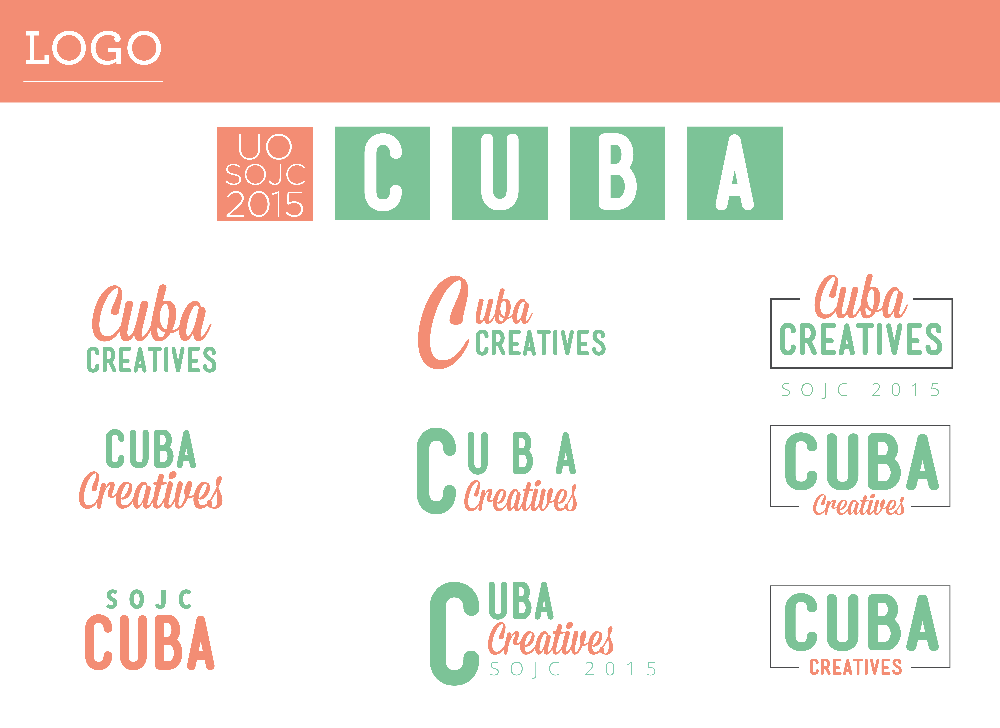
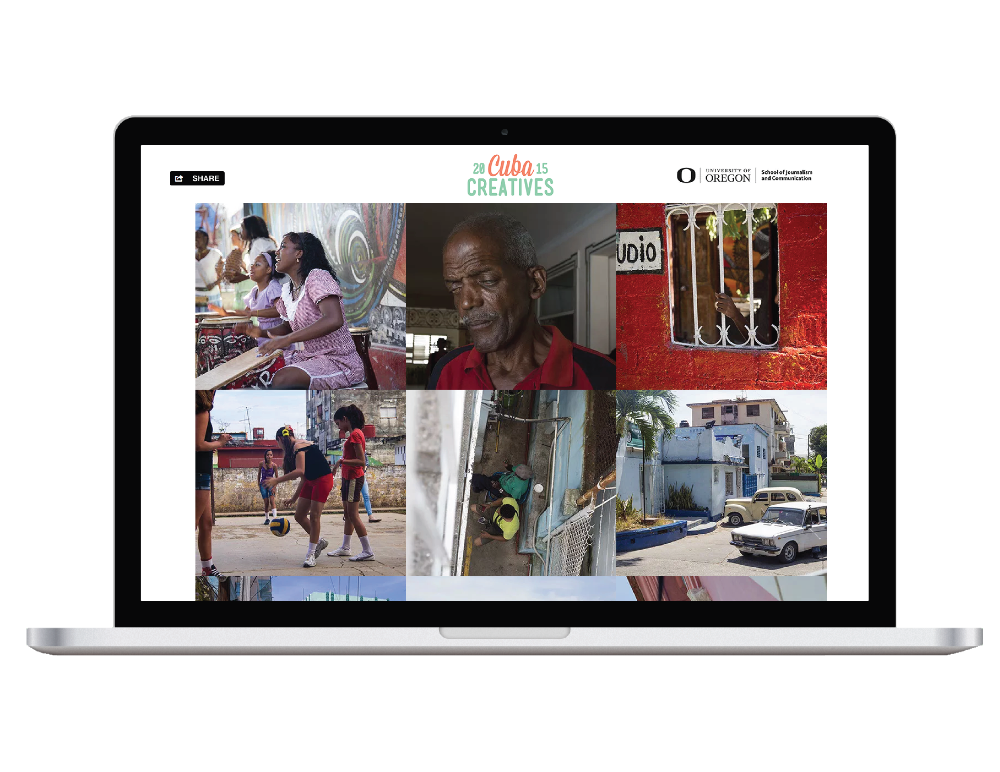

CUBA CREATIVESA small group of University of Oregon students embarked on a transformative journalistic expedition to Cuba. Our mission was to weave a narrative that honors the diverse tapestry of the Cuban people. Utilizing a solutions journalism approach, we aimed to provide a platform for overlooked local voices, often disregarded by traditional media outlets. |
|

|
Our ultimate goal was to amplify the voices of Cuban communities, enabling their stories to be heard. |

|
We were asked to produce a website and an iPad publication of interactive multimedia stories profiling Cuban locals. |
APPROACHAs a student-run creative agency, we took inspiration from NYTimes interactive news stories, Humans of New York, Yann Arthus-Bertrand's HUMAN documentary, and Harry Potter's moving images. We developed a visually compelling human-centered storyline profiling “Cuban Creatives” from different backgrounds and professions. Each story featured interactive elements that enabled readers to engage with the story as a living entity—transporting them to Cuba through the sights and sounds of this vibrant culture. |
|
|  |
As a co-lead designer, I crafted the logo and style guide while contributing to the overall art direction and vision for the final products. I was an interactive layout designer for the iPad publication, as well as a photographer and videographer for the Experiencing Motion story team. |

|
TAKEAWAYSBy practicing the art of empathy-based ethnographic interviews, our stories came to life with the gentle nudge of open-ended questions and active listening. The SOJC's solutions-based journalism philosophy taught us that personal details unveil important contextual history and that humanizing a story leads to eye-opening results. We understood that appealing to human nature through storytelling would have a much more profound impact on readers than metrics and statistics. |
|  |
MY ROLES
|